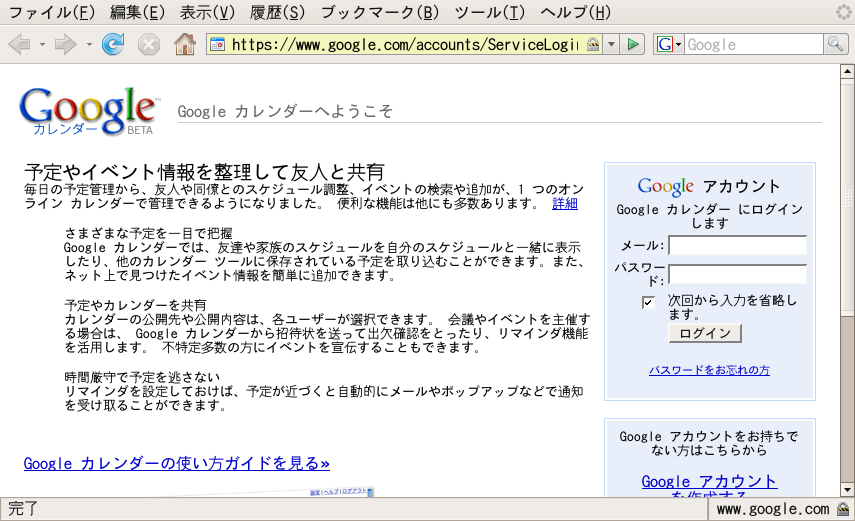
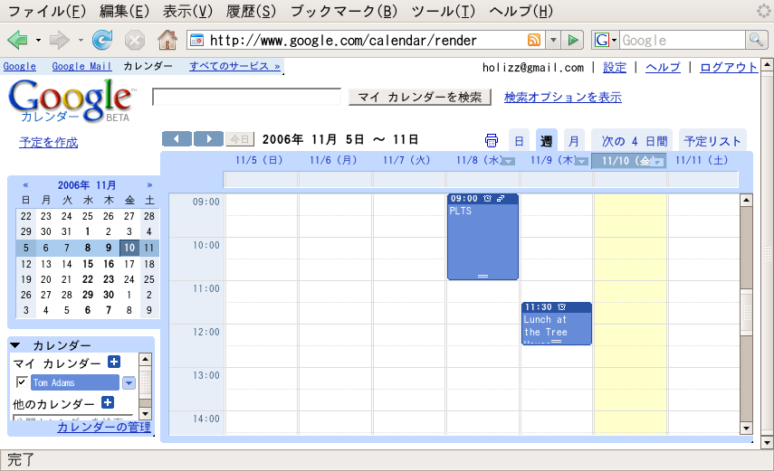
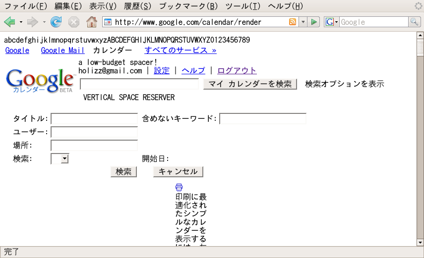
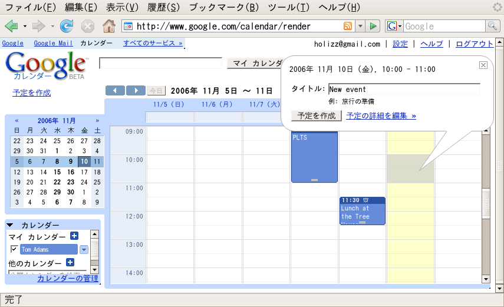
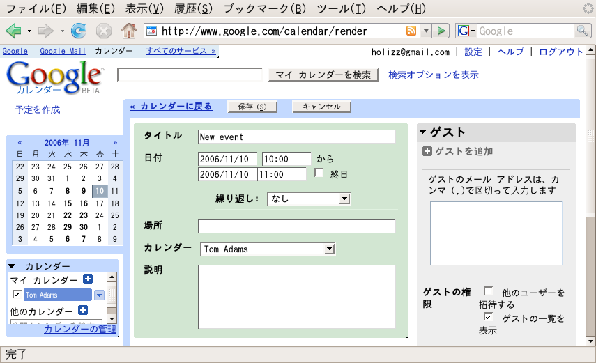

By Tom Adams (04018241)
Google Calendar is an online personal calendaring application.
All screenshots were taken from Firefox 2.0 running on Ubuntu 6.10 (Edgy Eft) .

Unless you are logged in, you are greeted at first by Google Calendar's login page. There's a short explanation of what Google Calendar is, and what you can do with it. As I gather, I can view my friends and family's schedule alongside my own, I can import the data of other calendaring tools, and presumably other exciting things like that (Japanese learning doesn't stop at the classroom door!).
As is evident from the URI and Firefox 2.0's yellow address bar and padlock, TLS or SSL is being employed to encrypt the HTTP traffic between the client and server (already my Google Account password is more secure than my UoB passwords).

The default calendar view shows the current week, with the days as columns and the time as rows. The calendar view rescales with the view pane; so while a stout view pane will allow you to view everything happily with a little more vertical scrolling, while a slim view pane will cause the columns to be resized to excessively small proportions (more so if the font size is large). This problem is worsened by the immobile whole month display on the left.
The main view frame can be set to display the current day, the current week, the current month, today and the next four days, or show the schedule as a list. The flexibility offered by the interface will allow a great many people used to many different systems to feel at home with Google Calendar.
The URI of the main interface (/calendar/render) appears to be follow the convention of /controller/action. It is similar to other Google URIs such as "/reader/view/" for Google Reader, and matches the default URI rewriting scheme for many popular Web development frameworks including Ruby on Rails.
Also note that the calendar view's traffic is not encrypted meaning that a malicious party could discover your dinner plans.

Of course Google Calendar makes use of CSS for all of the style. It not only relies on CSS to make the page look nice, but it abuses CSS. Rather than having an interface written in HTML, with beautification and usability additions in the CSS, the page doesn't make any kind of sense without CSS. In this way, the application couldn't fuction without HTML, CSS, or ECMAScript. The model, view, and controller (on the client side) are highly inter-weaved. Presumably this would make the application hard to write and maintain, but since Google has not yet revealed the nature of its internal tools for writing and maintaining such applications, judgements cannot be made as to readability.
 The granuality of events in the main calendar view go down to half hour time slots. Simply clicking an empty time slot will select a one hour period in which to create a new event. By clicking and dragging, a custom-length time frame can be created (althogh the time period cannot stretch between days). Once the time-period is defined, a Google-style speech bubble dialogue pops up to request a title for the event. Once the title is entered, the event can simply be created, or the event can be customised further on the event customisation page. An existing event can be customised by clicking the title.
 The URI doesn't change when editing an event. Nor is there a page refresh. This suggests (without having to dive into the code) that the [http://www.w3.org/TR/XMLHttpRequest/ XMLHttpRequest object] is being used to transfer data asynchronously (i.e. without page loads). This technique, when implemented in ECMAScript, is commonly referred to as AJAX (Asynchronous JavaScript and XML - JavaScript is the name of Netscape's implementation of the ECMAScript standard but is abused so much that a lot of people only know it as JavaScript).
The use of the XMLHttpRequest object has been gaining in popularity in recent years due to many high-profile projects (including many Google services) making use of it. It is used to reduce waiting times by only transferring small amounts of data and updating the page dynamically when needed rather than requiring a new page to be loaded, parsed, and rendered, which is a large bottleneck. It also reduces strain on servers due to only necessary data being transferred rather than retransmitting large amounts of static data along with a small amount of new data.
Care must be taken when using the XMLHttpRequest object not to alienate users of browsers which do not support it. In this case, Google has not provided any fallback for users of non-mainstream browsers.
Another reason the XMLHttpRequest object should be used with care is that by default there is no feedback available without specifically including it. For example, when entering a comment on an event, there is a slight delay between pressing the send button and anything happening (no 'loading'/'sending' user interface) so the first few times I made a comment, I clicked the send button again thinking I had missed the button or it was only looking for a mouseclick event (and ignoring keyboard interaction), which is a common mistake for ECMAScript neophytes. Even after I'd figured out what was going on, I was hard-pressed to stop myself from pressing the button again. This is a well-documented phenomenon in human-machine interaction: if the delay between input and feedback is too long (around two to three seconds, I believe), the user will almost always repeat the input even if they are aware of the delay (I would have referenced this, but I forgot where I read it). Perhaps this is why novice users tend to click links and buttons twice - because they don't know where to look for the feedback they need (which is usually in the form of a throbbing icon or a load bar located somewhere out-of-the-way in the chrome).
The following browsers were tested and found to work with Google Calendar:
The following browsers were tested and found to not work with Google Calendar:
Nothing works when ECMAScript is disabled. Nothing works when CSS is disabled. Most surprisingly of all, nothing works when HTML is disabled.
Unfortunately I could not test this application with accessibility tools such as a screen reader or a Braille terminal. I did, however, test the application using both Japanese and English. The application responds as expected to the Accept-Language HTTP header, and contains both English and Japanese translations.